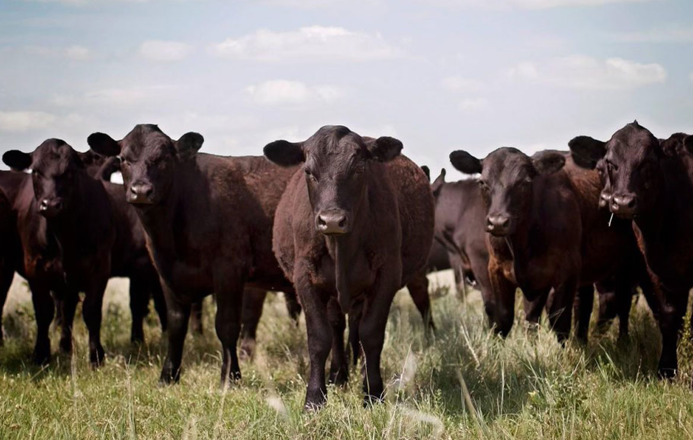

Cattle Operations
A typical stocker or background operation takes light-weight animals (500-600 lbs.) and places them on grass. The goal is to add pounds to the animals over the summer months and prep them for the next phase, which is feedlot operations.
Our journey starts in the spring. We purchase weaned steer calves in February-March annually. During the purchasing phase, we consolidate the animals and start a feeding ration that includes prairie hay, oats, triticale, millet and/or alfalfa. Mixing the ration and feeding a predominantly forage based diet. We also supplement with protein tubs, garlic mineral, and salt. This stage is often called confined feeding.

Simultaneously, our family inspect our pasture fences, mending wires, checking fencing staples and clips, and stretching barb wire. Depending on the winter, this can be a quick or tedious process. Our goal is to have the pastures ready by May 1st.
At the beginning of May, we sort and move the cattle to grass. Shifting the animals diet from a dry forage ration to green grass. This would include protein supplements and salt. These cattle are given space and a stress-free environment to gain weight. Our family shifts our focus to checking water, counting the herd, and supplementing nutrition as grass transitions in hot and dry summer months.
In the fall the cattle are consolidated again and shipped. Typically, we have two options:
1) Retain full ownership and transfer the steers to feedlot in Southwest Kansas. In this situation, we collaborate with the feedlot on finishing the cattle. That would include shifting to a high energy grain-based diet. Cattle typically gain 4-5 pounds per day and are sold to the highest bidder in 3-4 months. The steers grow to 1400-1600 pounds and sell on the Live Cattle Futures Market to a leading beef packer.
2) Avoid the expense and risk of the feedlot and sell the cattle at a local auction barn. In certain instances, this route is more profitable. The cattle are still heading to a feedlot, you are selling them and transfering ownership to another party.
The key to running a successful stocker operation is to analyze expenses, and monitor both feeder and live cattle markets to determine which course of action maximizes profits.